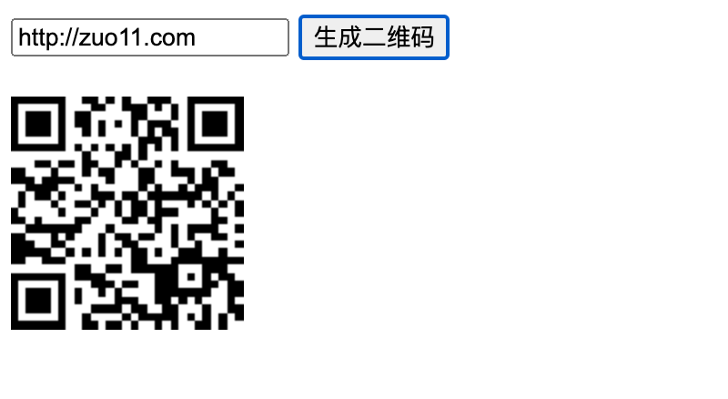

js生成二维码怎么实现
这篇文章发布于 2020/11/08，归类于 JavaScript
标签：
js生成二维码，前端生成二维码，js生成二维码链接
QRCode.js 是一个生成二维码的 js 库，使用 HTML5 Canvas 将二维码绘制到 dom 上，不依赖任何库。支持 svg 绘制方式
QRCode.js is javascript library for making QRCode. QRCode.js supports Cross-browser with HTML5 Canvas and table tag in DOM. QRCode.js has no dependencies.
QRCode.js 使用很简单，下面来写一个自动生成二维码的工具，在线示例 在线生成二维码工具

逻辑代码如下：
<body>
<div style="margin-bottom:20px;">
<input id="input" type="text">
<button id="btn">生成二维码</button>
</div>
<div id="qrcode"></div>
<!-- 在 https://github.com/davidshimjs/qrcodejs 下载的文件 --->
<script src="./qrcode.min.js"></script>
<script type="text/javascript">
let inputEl = document.getElementById('input')
let btnEl = document.getElementById('btn')
btnEl.onclick = () => {
document.getElementById("qrcode").innerHTML = ''
// new QRCode(document.getElementById("qrcode"), inputEl.value);
let qrcode = new QRCode(document.getElementById("qrcode"), {
text: inputEl.value,
width: 128,
height: 128,
colorDark: "#000000",
colorLight: "#ffffff",
correctLevel: QRCode.CorrectLevel.H
});
// 上面使用清空dom，再重绘，也可以使用内置的方法来重绘
// qrcode.clear(); // clear the code.
// qrcode.makeCode(inputEl.value); // make another code.
}
</script>
</body>注意：如果输入的是纯文本，那扫描后打开的就是纯文本，如果是 http:// 开头的网址，会直接跳转到对应的 URL
完整 demo，参见: 前端生成二维码 | github